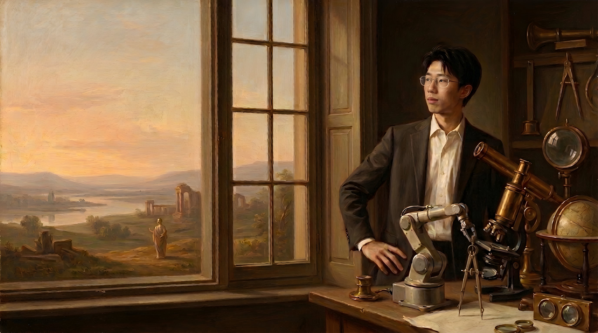
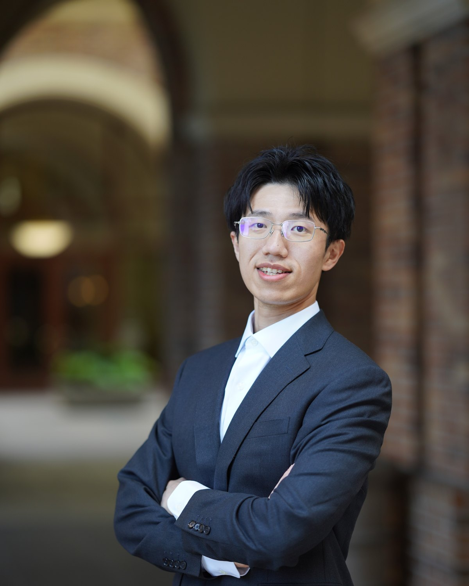

My name is Liang Li. I live in Sunnyvale, California, and I'm happiest where equations meet execution — the seam where something derived on paper has to survive contact with real hardware. The curiosity runs wide: new chips, quantum computing, robots that are finally learning to see.
Since 2022 that curiosity has had a home at ASML, where I build electron-beam inspection tools. The road there ran through a quantum-photonics lab at UC Davis, a graduate fellowship at Penn, and a summer at Fermilab building particle-detector instrumentation — different fields, same habit of pointing precise instruments at hard problems.
Off the clock, you'll find me at a ping-pong table, playing guitar, or wandering museums in whichever city I'm in — which is probably where this site's taste for old paintings comes from.

Hardware, software, and the seam between them.
An AI ad-creative tool integrating LLM and image-generation APIs — designed, built, and shipped end-to-end as a solo developer. My crash course in what it takes to turn a model into a product someone will actually use.
Watch the demo →An interactive learning app that teaches quantum-computing concepts through hands-on exercises on IBM's Qiskit SDK. Winner of the Qiskit Summer Jam hackathon — and my first taste of building for developers rather than end users.
See the submission →